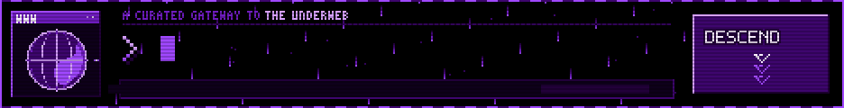

link-directory/×
nothing down here matches that. try another word.
submit-a-link.txt×
Discovered a site that belongs in THE UNDERWEB? Send it down for review.
submit a link →
hand-sortedDiscovered a site that belongs in THE UNDERWEB? Send it down for review.
submit a link →